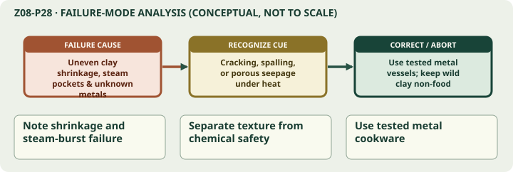

Z08-P28 · Rocks, minerals and materials · New manuscript
Wild Clay Cookware, Firing Limits and Thermal Failure
Explain why unverified wild clay vessels fail under open-fire thermal shock and cannot replace tested metal cookware or chemical-safe containers.
When it applies · Evaluating improvised pottery claims versus safe field water-boiling and food containers.
Equipment · Tested stainless-steel or anodized metal vessel for real boiling.

Actions
- Recognize that unverified wild clay contains variable silt, organic bits, and trapped moisture that crack or burst during rapid open-fire heating.[R13, R17]
- Reject wild clay vessels for drinking water or food preparation because unknown clay can leach heavy metals and porous walls harbor bacteria.[R12, R17]
- Rely on tested, food-grade metal vessels for boiling water and cooking rather than depending on unverified improvised pottery.[R12, R17, W11]
Failure recognition · Attempting to boil emergency water in untested field clay wastes scarce fuel and risks scalding bursts or heavy-metal leaching.[R12, R13, R17]
Verify · Wild clay is treated strictly as a geological/educational subject while water boiling uses verified heat-safe vessels.[R12, W11]
Stop or change course · Stop heating raw or field-dried clay vessels near people and never store drinking water or acidic foods in untested wild clay.[R12, R13, R17]
Evidence and editorial notes
- R12 · U.S. EPA · Protect Your Family from Lead in Soil and Dust (2025)
- Section: Soil contamination and urban/industrial lead hazards · Conditions: Soils near historic structures, roadways, mines, or industrial sites
Support: Soils and clays near older painted structures, smelters, tailings, or roadways may harbor lead or industrial contaminants.
Limitations: Visual texture or color cannot detect lead, arsenic, or chemical contaminants; do not use unverified soil/clay for cookware or food contact. · Conflicting evidence: None noted.
Editorial note: Separates clay plasticity checks from chemical safety. · Specialist reviewer: Environmental health and soil scientist
Primary source · checked 2026-11-25 - R13 · National Park Service · Rocks and Minerals Geological Overview (Current web edition)
- Section: Thermal shock, moisture spalling, and rock weathering · Conditions: Porous, laminated, or water-saturated stones exposed to heat or freeze-thaw
Support: Water-saturated, porous, or layered rocks can fracture violently when rapidly heated or subjected to freeze-thaw stress.
Limitations: Dry surface appearance does not prove internal pores are moisture-free; keep unverified rocks out of fires and hot vessels. · Conflicting evidence: None noted.
Editorial note: Reinforces Z03/Z08 wet-rock spalling stop. · Specialist reviewer: Geologist and fire safety reviewer
Primary source · checked 2026-11-25 - R17 · Minnesota Geological Survey (UMN) · Minnesota Geological Survey Maps and Regional Geology (Current web edition)
- Section: Clay-rich glacial lake sediments and plasticity limits · Conditions: Glacial lake plains and alluvial clay deposits
Support: Fine clay particles confer wet plasticity and shrinkage upon drying, unlike gritty silt or sand.
Limitations: Field ribbon/roll checks only estimate texture; they do not verify thermal shock resistance, firing integrity, or freedom from soil toxins. · Conflicting evidence: None noted.
Editorial note: Bounds Z08 clay identification vs cookware claims. · Specialist reviewer: Soil scientist and ceramic/materials specialist
Primary source · checked 2026-11-25 - W11 · CDC · Water Treatment Options When Hiking, Camping, or Traveling (current web edition)
- Section: Using light · Conditions: Portable UV disinfection device on a supported batch size of clear water
Support: Cloudiness interferes with UV. Use the device's stated volume, mixing and cycle instructions.
Limitations: Battery failure, cold battery voltage drop, or container UV opacity can silently defeat treatment. · Conflicting evidence: None; requires pre-clarification for turbid sources.
Editorial note: Requires verifying clarity, rated volume, and completed cycle indicator. · Specialist reviewer: Drinking-water treatment and equipment safety
Primary source · checked 2026-11-24
Source lineage · New manuscript (Z08 P16 clay limits) · Classification · New manuscript.